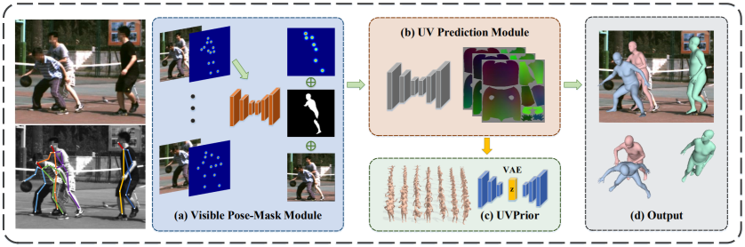
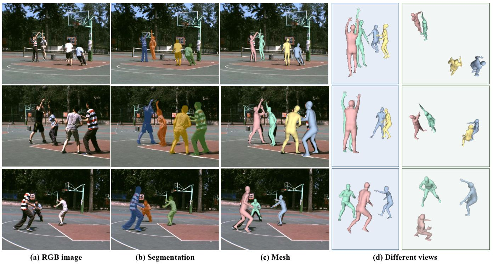
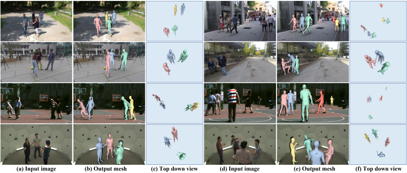
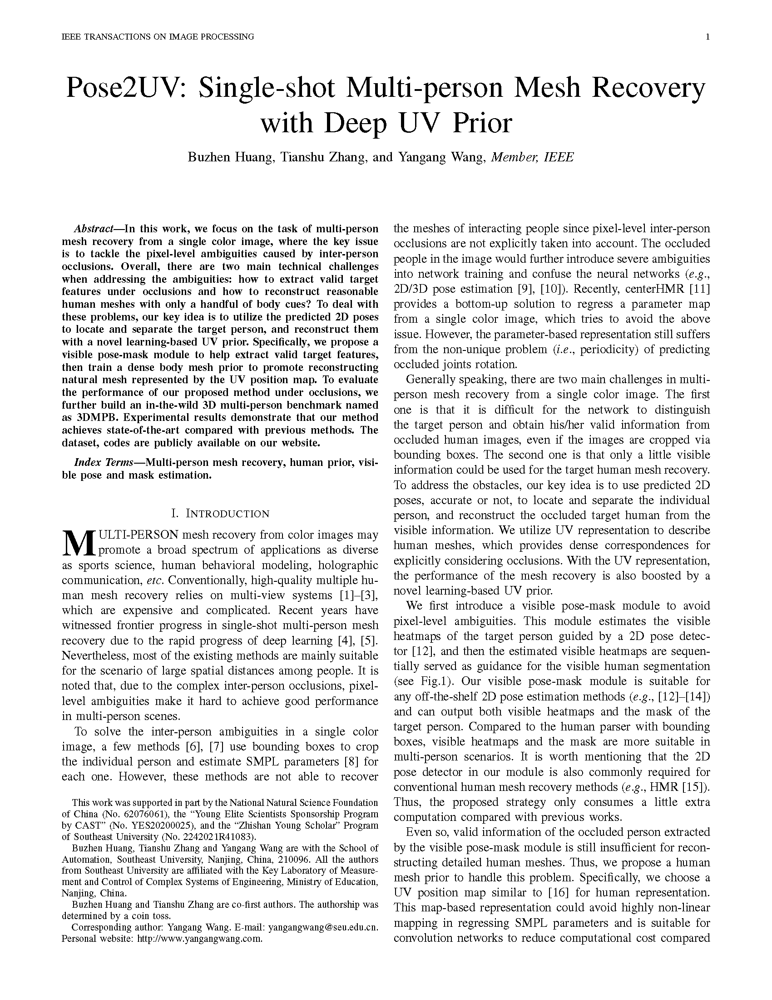

IEEE Transactions on Image Processing (TIP)
Pose2UV: Single-shot Multi-person Mesh Recovery with Deep UV Prior

Overview of the proposed framework.
Given a challenging multi-person image, we first utilize the predicted 2D pose to locate and crop each individual. The heatmaps and image patch of each person are then fed to the visible pose-mask module (a) to estimate the visible heatmaps and masks. With the help of the proposed UVPrior (c), the UV Prediction Module (b) regresses a plausible UV position map from partial body cues. We can resample the predicted map to obtain a human mesh. Finally, we calculate the absolute position based on the regressed 3D joints and the visible 2D joints (d). Abstract
In this work, we focus on the task of multi-person mesh recovery from a single color image, where the key issue is to tackle the pixel-level ambiguities caused by inter-person occlusions. Overall, there are two main technical challenges when addressing the ambiguities: how to extract valid target features under occlusions and how to reconstruct reasonable human meshes with only a handful of body cues? To deal with these problems, our key idea is to utilize the predicted 2D poses to locate and separate the target person, and reconstruct them with a novel learning-based UV prior. Specifically, we propose a visible pose-mask module to help extract valid target features, then train a dense body mesh prior to promote reconstructing natural mesh represented by the UV position map. To evaluate the performance of our proposed method under occlusions, we further build an in-the-wild 3D multi-person benchmark named as 3DMPB. Experimental results demonstrate that our method achieves state-of-the-art compared with previous methods.
3DMPB Dataset
We build an in-the-wild 3D multi-person benchmark,
3DMPB
, which provides a lot of human-human interactions and inter-person occlusions cases with challenging poses in real basketball scenes. The annotations are obtained with DMMR.
Access code: 9sgc

Results

Materials
|

Related links
|
|
Reference
Buzhen Huang, Tianshu Zhang and Yangang Wang. "Pose2UV: Single-shot Multi-person Mesh Recovery with Deep UV Prior". IEEE Transactions on Image Processing (TIP), 2022.
Acknowledgments: This work was supported in part by the National Natural Science Foundation of China (No. 62076061), the “Young Elite Scientists Sponsorship Program by CAST” (No. YES20200025), and the “Zhishan Young Scholar” Program of Southeast University (No. 2242021R41083).